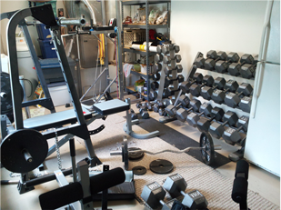

Hello, my name is Bryan Hill. I currently have an Associate's degree in Business Administration from Hillsborough Community College and a Bachelor's degree in Management of Information Systems (MIS) from the University of South Florida. I spend most of my time studying, reading, and working out in the gym in my garage.
 I started working out when I was in high school because I got sick of being skinny. I was always a scrawny kid, and people had the tendency to make assumptions about me because I was skinny (130 lbs). It meant nothing other than the fact that I have a high metabolism. Anyway, in 2002 I was in a severe car accident that left me in a coma for 7 days. When I awoke I did not know anything about who, where, or what I was. It must be known however, that I was quite smart before the accident. Anyway, the doctors told me that I would be able to regain my intelligence but it would take several years for that to happen. My progress has been delayed slightly by some events, but I am on the right path now.
If your wondering how that story ties into the home gym, calm down and read on. In 2006 I started feeling like I was in a much better state overall. Part of that I believe was fueled by my efforts in my home gym. My gym didn't start like you see it now, I started out with a few dumbbells and that was it. In 2006 I set out to gain 70 lbs. Yes I said 70 lbs, of muscle. So I began to do some research into what that would take, without using steroids mind you. My oldest brother told me about a website called T-Nation where I might be able to learn some things about gaining muscle. Now, the website is geared toward elite body builders but I figured if anyone knows how to add muscle it would be them. Turns out they do know a thing or two. I read an article entitled Massive Eating and then based my entire diet around the principles laid out in that article. For myself, based on the principles of that article, in order for me to reach my target weight of 200lbs, from my weight at the time of 130lbs, I had to eat 4,000 calories a day. I did so by eating 6 times a day, and approximately 200 grams of protein per day. Now if your wondering how the gym went from a few dumbells to what you see, well it grew along with me. As I got bigger and stronger, I bought more weights. I started with a Gold's Gym XR-37 rack and pulley system. It is an adjustable weight rack with a low-pulley and a high-pulley attached. As I progressed I changed the bench to an adjustable Iron-Man bench, although I had to drill an additional hole in the adjustment bar to allow me to adjust the bench to completely vertical for shoulder presses. I also added an Iron-Man Dip/Pull-Up/Leg-Raise station. Over the years the dumbells have increased to the point where at present I have dumbells 5-120lbs in 5lb increments. The only ones I am missing are the 105's and the 115's. As for the weight gain goal, by the end of 2006 I weighed about 185-190. I have since put on another 40lbs and currently weigh 225lbs (still too skinny...). However I no longer eat 4,000 calories a day, that was only for my gaining phase. If your wondering what supplements I used to help me gain the weight I gained they are not extreme at all. During my 2006 gaining phase, when I was eating 6 times a day and working out twice a day, I used a lot of BioTest brand supplements. They are available on the T-Nation website. I also used a lot of GNC brand supplements, and other supplements available at GNC. The most important ones are Biotest's Aplha Male testosterone booster, one of the only T-boosters I have found with minimal side effects and effective results. The other important supplement, more important than a T-booster is simply protein. Lots and lots of protein, whey protein and whey isolate to be specific. BioTest has a whey protein called Grow that I used and a whey isolate called Surge that I used. I also used the BioTest brand creatine product as well. From GNC I used their Amplified Mass XXX, and several of their other GNC Pro Performance brand proteins. I also take fish oil and glucosamine for my joints, and GNC's Mega Men Multivitamin. For a more detailed analysis of how I gained the weight I gained please reference my Get Big link in the menu bar.
Back to my progress in school, as I built my body my grades in school also began to improve. About that same time I saw my physical goals realized my scholastic abilities peaked as well. Starting in the fall of 2006 I began seeing A's and B's - whereas when I first started college after the accident in 2003 all I was able to earn were C's. By 2007 straight A's were common. Perhaps it was simply by challenging myself physically I pushed myself further mentally as well. It also helps that I continued to challenge myself each semester, taking classes that logic would have told you I shouldn't have been able to pass given my head injury. It was a very challenging period in my life, when I started at HCC I had to take remedial math classes to help get myself up to the level of a basic math class. By the time I finished I had taken up through Calculus II (MAC 2312). How did I do? I got an A in Calculus I (MAC 2311) and a B in Calculus II (MAC 2312). I ended up focusing on Business Administration for my Associates degree, and I received A's in every core business class I took. I am not trying to boast, it was not easy, I worked VERY hard to receive those grades. My point is that it is possible, with the right mindset.
One of my favorite quotes that has helped me through the years:
{kind=link}
{kind=link}